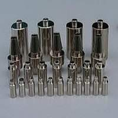

Thông tin chi tiết

Xi mạ niken mờ
Xi mạ niken mờ là quy trình sử dụng dòng điện và các hóa chất mạ niken để tạo một lớp bảo vệ phủ lên bề mặt vật liệu kim loại không có độ bóng, có màu trắng mờ và đục, có khả cải thiện các đặc tính.
Thông tin sản phẩm
-
Xi mạ niken mờ là gì?
Xi mạ niken mờ là quy trình sử dụng dòng điện và các hóa chất mạ niken để tạo một lớp bảo vệ phủ lên bề mặt vật liệu kim loại không có độ bóng, có màu trắng mờ và đục, có khả cải thiện các đặc tính.
 -
Tại sao nên Xi mạ niken mờ?
Lớp mạ niken trên bề mặt kim loại có độ bám dính tốt, cùng với khả năng chống mài mòn. Ngoài ra, lớp xi mạ niken mờ khó bong tróc nên rất hiệu quả sử dụng chống oxi hóa bền mặt cho kim loại. Với đặc tính trên lớp mạ niken rất ưa chuộng và phổ biến trong các ngành công nghiệp và lĩnh vực khác.
-
Quy trình Xi mạ niken mờ:
- Gia công bề mặt vật liệu: tiến hành xử lý bề mặt kim loại có được độ nhẵn và bóng, tiếp đó tẩy sạch dầu mỡ, bụi bẩn bằng dung dịch môi, và rửa lại nước.
- Kiểm tra bề mặt vật liệu bị lõm hoặc nứt cần phải khắc phục ngay để tăng độ bám dính và sự đồng đều của lớp mạ niken.
- Kiểm tra mức độ sạch của vật liệu bằng cách cho vật liệu vào thùng nước, nếu mà còn chất bẩn, ô nhiễm thì những chất bẩn này sẽ tự động nổi lên mặt nước và bạn có thể dễ dàng loại bỏ chúng.
-
Tiến hành quy trình xi mạ niken: Trong quá trình xi mạ nikenbạn cần phải lưu ý, gắn vật liệu cần mạ vao cực âm catot,
gắn kim loại mạ vào cực dương anot vào nguồn điện. Lúc này, cực dương của nguồn điện sẽ hút các electron e,trong quá trình
oxi hóa và giải phóng các ion kim loại dương và hình lợp kim loại.
Trong công nghiệp hóa chất, thường xi mạ niken để bảo vệ những bộ phận tiếp xúc với môi trường ăn mòn, xi mạ niken còn dung trong kỹ thuật in, mạ các khuôn bản in, tăng độ cứng bề mặt, tăng tính chịu ăn mòn. Công nghệ xi mạ niken được dùng để trang trí cho các dụng cụ gia đình, phụ tùng xe đạp, dụng cụ y tế.
-
Ứng dụng việc Xi mạ niken mờ
Hiện nay, công nghệ mạ niken mờ được sử dụng nhiều cho ngành trang sức để tạo sản phẩm sáng bóng, tăng tính thẩm mỹ, độ bền. Có thể nói, xi mạ niken ngày càng khawtng định được vai trò quan trọng của mình,góp phần thúc đẩy phát triển lĩnh vực xi mạ nói riêng và lĩnh vực công nghiệp nói chung.
Tuy nhiên, mạ niken bóng thời gian dài sẽ bị mờ trong không khí. Do đó để sản phẩm có độ chính xác cao, ma sát lớn, chống chịu mài mòn thì nên xi thêm lớp mạ crom cứng để đạt chất lượng tối ưu. -
Lợi ích khi Xi mạ niken mờ
Các sản phẩm kim loại được xi mạ niken có những lợi ích chẳng hạn như cải thiện độ cứng và độ dẻo, tăng sức đề kháng chống ăn mòn Đặc biệt, lớp Xi mạ niken cũng giúp cho bề mặt vật liệu trở nên sáng bóng và tính thẩm mỹ hơn.